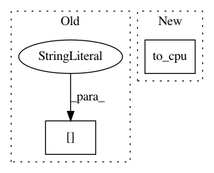

d37d08d9b2a806b3345fba41711c0d517b92a65c,chainercv/links/model/vgg/vgg16.py,VGG16Layers,predict,#VGG16Layers#Any#,215
Before Change
if self.do_ten_crop:
n = y.shape[0] // 10
y_shape = y.shape[1:]
y = y.reshape((n, 10) + y_shape)
y = self.xp.sum(y, axis=1) / 10
return cuda.to_cpu(y)
After Change
activation = self._gather_ten_crop(activation)
activations[name] = cuda.to_cpu(activations)
else:
activations = cuda.to_cpu(activations.data)
if self.do_ten_crop:
activations = self._gather_ten_crop(activations)
return activations
In pattern: SUPERPATTERN
Frequency: 3
Non-data size: 2
Instances
Project Name: chainer/chainercv
Commit Name: d37d08d9b2a806b3345fba41711c0d517b92a65c
Time: 2017-06-15
Author: yuyuniitani@gmail.com
File Name: chainercv/links/model/vgg/vgg16.py
Class Name: VGG16Layers
Method Name: predict
Project Name: chainer/chainercv
Commit Name: 5b36f836715758d83733531ad2253775b476a764
Time: 2017-05-08
Author: Hakuyume@users.noreply.github.com
File Name: chainercv/links/ssd/ssd.py
Class Name: SSD
Method Name: _suppress
Project Name: chainer/chainercv
Commit Name: fa77503653547fbc02164c56b34f7c55cf35ee9f
Time: 2017-05-07
Author: Hakuyume@users.noreply.github.com
File Name: chainercv/links/ssd/ssd.py
Class Name: SSD
Method Name: _suppress